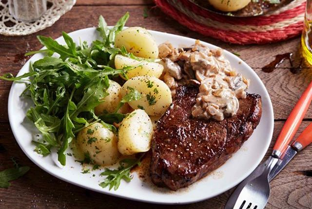

Rump Steak

Description
A lovely easy meal that any family will enjoy to ahve on their plate.
Fresh and vibrant, oozing with such flavours that explodes as soon as you bite into it.
Ingredients
- Rump steak
- Baby potatoes
- mushrooms
- Wild Rockets
- Butter
Instructions
- Cut potatoes in half and boil for about 25 minutes
- Fry the mushrooms, and drop some butter. Wait untill its fully caramelised and take off pan
- Cook the rump steak on a hot pan, about 3 minutes on each side for a perfect medium rare
- Drop some butter and coat the steak well, until its done cooking
- finally garnish with a side of wild rockets and voila